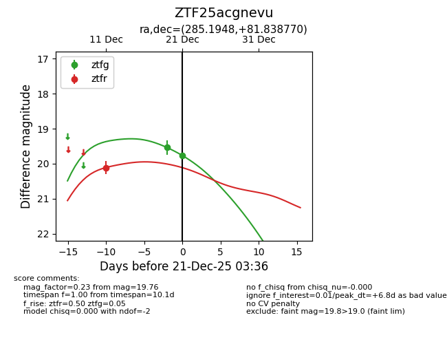
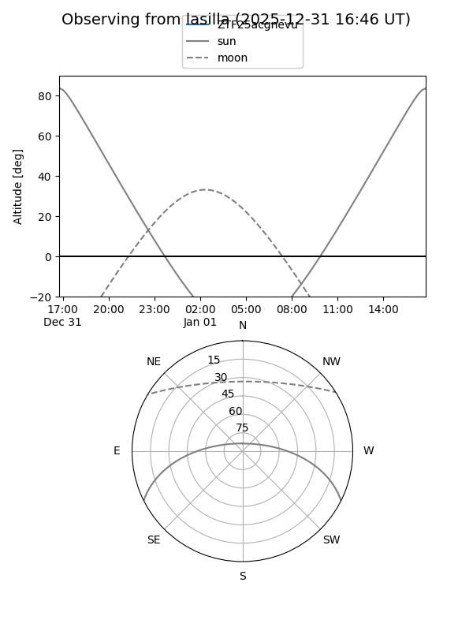
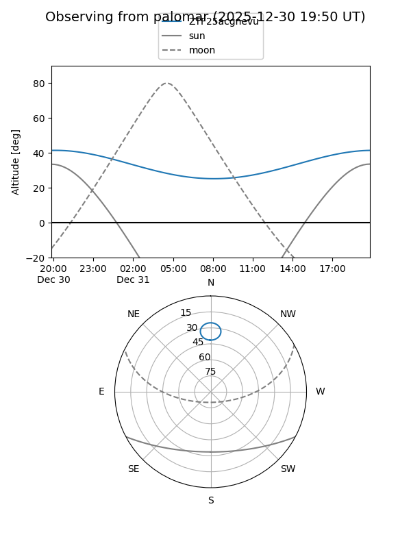
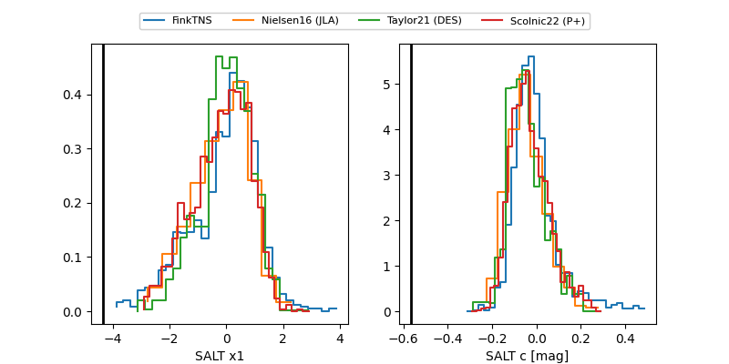

ZTF25acgnevu
Target ZTF25acgnevu at 2025-12-19 04:07
Aliases and brokers:
FINK: fink-portal.org/ZTF25acgnevu
Lasair: lasair-ztf.lsst.ac.uk/objects/ZTF25acgnevu
ALeRCE: alerce.online/object/ZTF25acgnevu
alt names
ZTF25acgnevu (ztf,fink_ztf)
Coordinates:
equatorial (ra, dec) = 285.1948,+81.83877
equatorial (HMS+DMS) = 19:00:46.75,+81:50:19.57
galactic (l, b) = (113.8124,+26.50127)
Flags:
Photometry:
last ztfg=19.54, ztfr=20.11
1 ztfg, 1 ztfr detections
Lightcurve

Visibility


Additional plots
